Lugares imprescindibles que se deben visitar en Pamplona
La ciudadela
 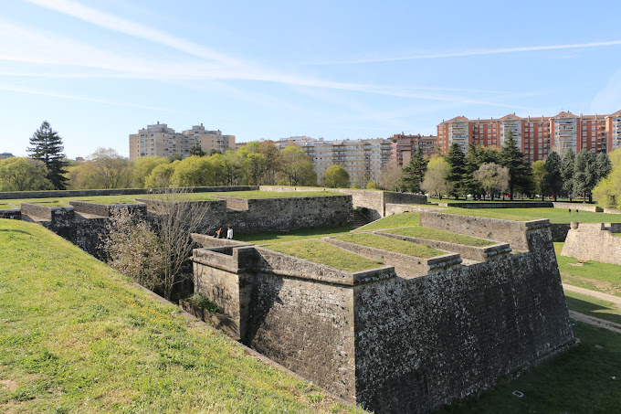
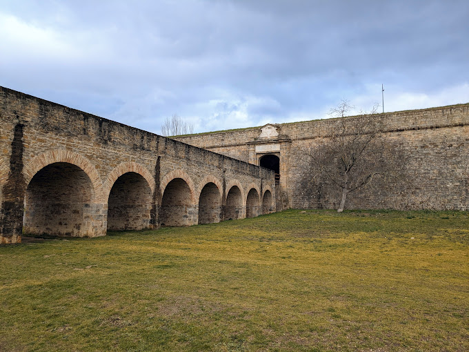
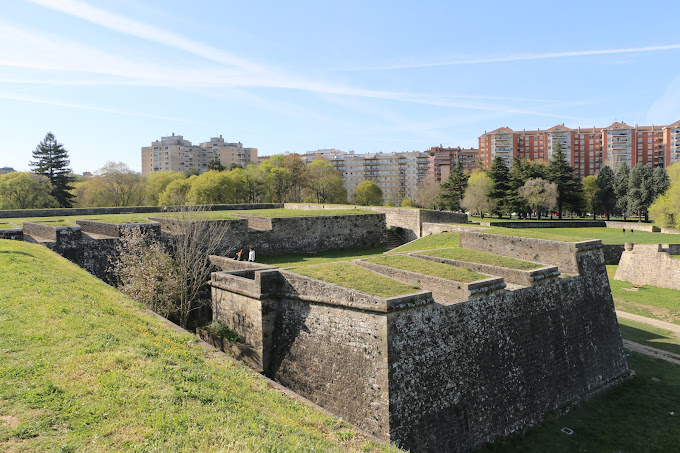
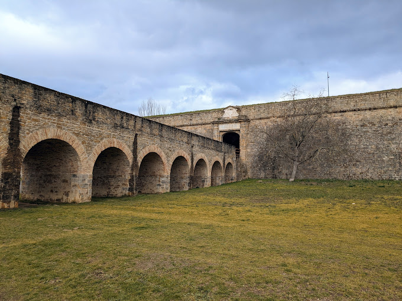
Pulmón verde de la ciudad, hoy en día es la ciudadela pentagonal en pie más antigua del mundo.
La ciudadela de Pamplona o castillo Nuevo (en euskera: Iruñeko Zitadela) es una fortificación renacentista de antiguo uso militar, construida entre los siglos XVI y XVII en la ciudad de Pamplona, capital de la Comunidad Foral de Navarra (España), declarada plaza fuerte dentro de los planteamientos militares geoestratégicos de la Corona de España durante el Antiguo Régimen y hasta el 21 de mayo de 1964.1 En la actualidad se mantiene gran parte de ella en pie como espacio verde y como área de uso para actividades culturales dentro de sus edificios actuales. Está declarada como Monumento Histórico Artístico Nacional (Bien de Interés Cultural) desde el 8 de febrero de 1973.23 En 2012 obtuvo el premio de Patrimonio Cultural de la Unión Europea Europa Nostra en la categoría de 'Conservación', además del premio especial del público.
El Ayuntamiento
El Ayuntamiento de Pamplona (en euskera: Iruñeko Udala) es la institución que se encarga de gobernar la ciudad de Pamplona, capital de Navarra, España. La sede está emplazada en la Plaza Consistorial, en el Casco Antiguo, que es el lugar desde el que se lanza el chupinazo que da comienzo a las Fiestas de San Fermín cada 6 de julio a las 12:00 horas. Está presidido por el alcalde de Pamplona, que desde 1979 es elegido democráticamente por sufragio universal. El edificio Artículo principal: Casa consistorial de Pamplona Reloj del Ayuntamiento. Portada de la Casa Consistorial. La ubicación del edificio se dispuso en 1423 por disposición del Privilegio de la Unión de la unificación y pacificación de Pamplona por Carlos III de Navarra. Estaba localizado en un lugar sin edificar y equidistante de los distintos burgos de Pamplona. En esta misma ubicación se han sucedido varios edificios. Así en 1753 se derribó el primitivo y comenzó a construirse uno nuevo por el arquitecto Juan Miguel Goyeneta y fachada de estilo rococó de José Zay y Lorda realizada en 1755, pero que en la parte alta fue modificada un año después por Juan Lorenzo Catalán. Esta fachada es lo único que queda del edificio de entonces. Sin embargo tiene un gusto barroco en algunos detalles como son el balconaje de hierro y las esculturas alusivas de la Prudencia, la Justicia, Hércules y la Fama.2 El interior del edificio se derribó completamente, desapareciendo una espléndida escalera barroca de José Mazal, y reconstruido en 1951 bajo dirección del arquitecto José Yárnoz
La La plaza del Castillo
 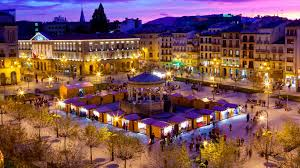
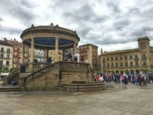
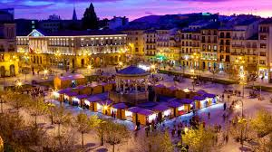
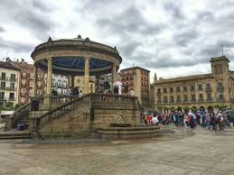
La plaza del Castillo (en euskera: Gazteluko Plaza o Gazteluko Enparantza) es una plaza pública situada en el centro de la ciudad de Pamplona (Navarra), España, y que ocupa una superficie de casi 14 000 m2. Es la segunda más grande de la ciudad, siendo superada por la plaza de los Fueros, con unos 18 000 m2.1 De su parte meridional parte la Avenida Carlos III que comunica con el Segundo Ensanche de Pamplona. Desde su construcción, a mediados del siglo XVI, la plaza se convirtió en el centro neurálgico de la vida social pamplonesa y en uno de los iconos más reconocibles de la ciudad, siendo hoy en día todavía escenario de importantes acontecimientos de la misma, por lo que suele ser habitual referirse a ella como "el cuarto de estar" de todos los pamploneses.2 Urbanismo y arquitectura La plaza del Castillo se ubica al sur del Casco Antiguo de Pamplona entre los antiguos burgos medievales de San Nicolás y la Navarrería y sirve de nexo de unión entre la zona antigua y la parte nueva de la ciudad, conocida como Segundo Ensanche y edificada según plano ortogonal en el primer tercio del siglo XX. Se trata de una plaza abierta, porticada en todos sus lados, pero sin un estilo uniforme, fruto de haber sido configurada por la construcción sucesiva de edificios en sus lados y no como proyecto urbanístico uniforme. Esto hace que los edificios que la conforman hayan sido construidos en distintas épocas y poseen alturas diferentes, lo que da a la plaza un aspecto arquitectónicamente especial. Entre ellos destaca en su lado sur una de las fachadas del palacio de Navarra, en su lado norte el edificio del antiguo Casino y en su lado este el palacio de Goyeneche, casona palaciega barroca. La plaza es peatonal y está ajardinada en forma de parterres que dan cobijo a un arbolado compuesto principalmente por plátanos de sombra. Quiosco El centro de la plaza está ocupado, desde el 28 de junio de 1943, por un quiosco de música de 18 metros de altura elevado sobre tambor escalonado y cuya cúpula está sostenida por columnas de orden jónico. Anteriormente tuvo uno de madera que había sustituido en 1910 a la fuente de la Beneficencia, obra de Luis Paret, conocida en Pamplona como "La Mariblanca", actualmente adornando los Jardines de la Taconera de la ciudad.3 Al sur de la plaza, en el comienzo de la Avenida de Carlos III se encuentra la estatua dedicada al rey Carlos III el Noble.
Leer másCalle Estafeta
Una de las calles más conocidas de Pamplona por formar parte del recorrido del encierro y por sus bares y pintxos.
Estafeta es el nombre de una famosa calle de la ciudad de Pamplona, la capital de la Comunidad Foral de Navarra (España), debido a que es una por las que discurre el encierro de San Fermín. Antiguamente se llamaba Rúa de la Zaga del Castillo y Calle de San Tirso
Esta calle, de unos 250 metros, una de las más largas del Casco Antiguo de Pamplona empieza en la también famosa curva de Mercaderes y termina en el tramo de Telefónica. Es una calle con un 2% de pendiente, con un asfalto de adoquines, hasta que fue sustituido por losetas, y con la mayor parte de la calle entre dos paredes. En este punto, la manada de toros con cabestros a menudo suele ir partida y a un ritmo bastante lento, por lo que los mozos aprovechan y se ponen delante de las astas de los toros. Esta acción es conocida como "coger toro"
Cuesta de Santo Domingo
Con sus 280 metros de longitud y en una cuesta de hasta el 10% de desnivel, la Cuesta de Santo Domingo es el primer tramo del Encierro, sin duda, el acto más conocido de las fiestas de San Fermín y que mayor interés suscita a nivel mundial. Supone casi un tercio del recorrido del Encierro, de 850 metros. Los toros salen de un corral situado en un antiguo baluarte de la muralla, el Corral de Santo Domingo. Se considera el tramo más peligroso, pues es donde más rápido corren los toros, ya que salen descansados y cogen carrerilla e impulso. Además, en el último tramo de la Cuesta, antes de llegar a la plaza Consistorial, no hay ningún refugio para que los corredores puedan retirarse. En la parte baja de este primer tramo, está la hornacina con la imagen de San Fermín, patrón de las fiestas. Minutos antes del comienzo del Encierro, los corredores -o mozos- le entonan varias veces un cántico para pedirle protección: “A San Fermín pedimos; por ser nuestro patrón; nos guíe en el encierro; dándonos su bendición”. En el origen del cántico hay cierta confusión. Esto se debe a que sus autores y quienes lo hicieron mundialmente famoso no son los mismos. La autoría original recae en una cuadrilla de Pamplona de los años 50, pero fueron los Iruña’ko, grupo musical formado en 1954, quienes realizaron su versión y con quienes alcanzó la fama mundial hasta convertirse en himno de los corredores del encierro. El Capotico de San Fermín Un “capotico” es un capote pequeño que cubre a la figura real de San Fermín en la capilla y a la pequeña de cincuenta centímetros a la que los corredores se encomiendan antes de cada carrera. Existe un dicho que apunta que ‘echar un capote’ significa ayudar a alguien, de esta manera, el capotico de Sanfermin haría de milagroso ante las situaciones inéditas que se dan en un encierro. Es por ello que tanto creyentes como los no creyentes, se encomienden a él ante seis toros salvajes sueltos.
Rincón del Caballo Blanco
 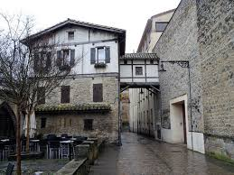
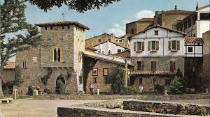
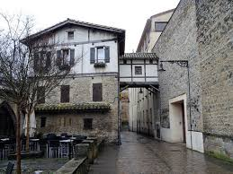
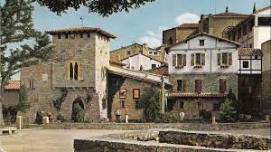
Este es sin duda uno de los rincones con más encanto de la ciudad, un bello lugar para el paseo junto a la Plaza de San José y la Catedral. Constituye la parte más alta del Bastión del Redín, donde se levantaba antiguamente un palacio del que solo se conserva la Cruz del Mentidero, lugar de ejecuciones que data de 1500. Las vistas son consideradas como las mejores de la ciudad, se pueden ver los barrios de la Rochapea, Chantrea y San Jorge, y al fondo el monte San Cristóbal con su fuerte abandonado en la parte más alta. El Bastión del Redín se consideraba el mejor punto defensivo de la ciudad y el más inaccesible de todo el complejo amurallado. Al tener una forma estrellada con tres puntas, los cañones podían cubrir todos los ángulos de tiro. En cada extremo de la estrella hay una garita de diseño renacentista, iguales que las de la Ronda Barbazana. Durante los siglos XVI y XVII la muralla se reforzó con nuevas construcciones, había que adecuar el aparato defensivo a los nuevos tiempos y aparatos bélicos. Así, a los pies del bastión se excavaron fosos y se levantaron nuevas fortificaciones, como el Baluarte Bajo de Guadalupe, y más abajo aún, se encuentra el Revellín de los Reyes, una fortificación triangular cuya misión es dividir a la fuerza atacante y proteger los muros mediante un fuego cruzado. Por su proximidad al Camino de Santiago, que entra a la ciudad por el Portal de Francia y sube por la calle del Carmen, es un lugar muy frecuentado por los peregrinos, que se toman aquí un merecido descanso.
Ubicación puntos turísticos Pamplona